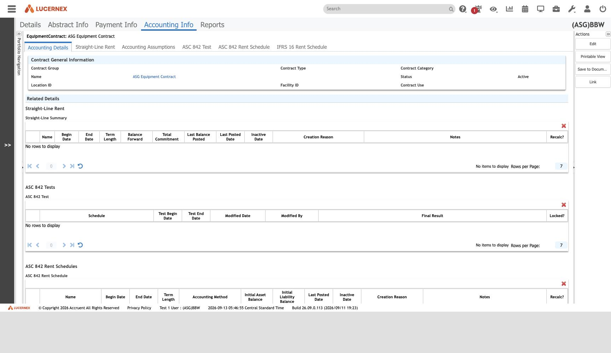

Atlas › Vault › "Equipment Contract — Accounting Details"
The same findings as small linked notes. Start anywhere and follow the links — this is the view for wandering rather than looking something up.
EntityInfo.jsp — not deep-linkable
docs/assets/screenshots/bbw-enduser/eq-04-accounting-details.jpg
{kind=link}
The most important screen in the equipment-contract module, because of what it does not drop.
Straight-Line Rent, Accounting Assumptions, ASC 842 Test, ASC 842 Rent Schedule, IFRS 16 Rent Schedule — all present. 6 of Contract's 7 screens, with only Capital Lease Test removed (q-bbw-02-capital-lease-test).
This is finding-accounting-runs-per-asset rendered. The schema-side evidence was three nullable foreign keys to Asset; here the product exposes the same fact as a first-class navigation root with its own 26 screens.
For ASG Edge+ that is a scoping constraint: an engine built as "schedules hang off contracts" cannot take equipment leases, and the incumbent's own product line expects them.
See one-engine-three-standards · SLSummary
All screens: map-of-screens · caveats: caveat-viewport · caveat-one-equipment-contract